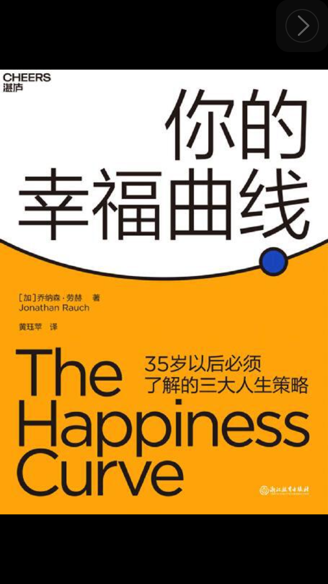

你的幸福曲線

這本書已經躺在我的電子書櫃很久了。原先是因為某個群組內的群友想要看這一本中國大陸才有翻譯的書，但是他想買實體書寄回台灣，卻發現海關似乎會查扣大陸的實體書，也因此我當時在中國亞馬遜還沒關掉之前，就買了這本電子書給他看。但是到了最近，因為讀書群的群友聊天時，我又提起這本書，於是我就開始閱讀這本書。
這本書的作者，訪問一些少數研究幸福經濟學的學者，當大多數的經濟學家都是要推導或是建立自己的經濟學理論，來解決當今政府及社會面臨的經濟問題，使大多數的人可以生活或經濟可以獲得改善。然而，這些幸福經濟學的學者，反而關注的是，如何讓人們在精神以及心理層面上，過得更幸福。也因此這些學者訪問了各種案例，也做過統計分析，結果得出一些驚人的現象。
第一，就是絕大部分的人步入中年，幸福指數就會下降。這無關你的成就高低。即便你的已經獲得許多大小獎項，或是已經賺了許多錢，獲得晉升或升遷的機會，但是你仍會感到不滿足，依舊會感到不幸福，這種感覺就會像黑洞一般吞噬你。研究發現大多數的人在中年都會經歷這樣的過程，所以當你發現你中年是有這樣的現象，不需要大驚小怪，只要沈著應對就可以度過難關。
第二，絕大部分的人到了老年，幸福指數就會提升，這樣的發現也同樣的讓我們錯愕。一般我們都會認為老年應該都會過得很淒涼，不僅病痛纏身，體力大不如前，基本上拓展人際關係的機會也越來越少，可是為什麼還會感到幸福呢？學者發現幸福感會隨著年齡增加而增加，由幸福公式曲線H=S+C+V+T得知，C是環境，V是可控因子，T則是時間，所以當年齡增加，幸福感就會提升。即便年老時你的好友會一一離世，但是你會因此更珍惜目前擁有的，而不是看到你所失去的。
這本書解釋了為什麼到了中年就會什麼都不順，什麼都不滿意。而到了老年，儘管已經到了人生的盡頭，卻反而會對生活感到滿意，只能說造物主的設計實在很奧妙。所以不用煩惱你會經歷中年的低潮，因為只要隨著年齡增長，自然就會迎來人生的幸福。
延伸閱讀:
天下雜誌出版-晶片戰爭(克里斯˙米勒)[Kindle]使用Calibre+DeDRM，幫你去除亞馬遜(Amazon)電子書的DRM
另外，美國購物代運可參考:
https://a1253247.blogspot.com/p/hopshopgo-vs-spexeshop.html
對板球有興趣的可參考:
https://a1253247.blogspot.com/2022/05/cricket-line-written-by-admin-24-10.html
對生活飲食有興趣，可參考: